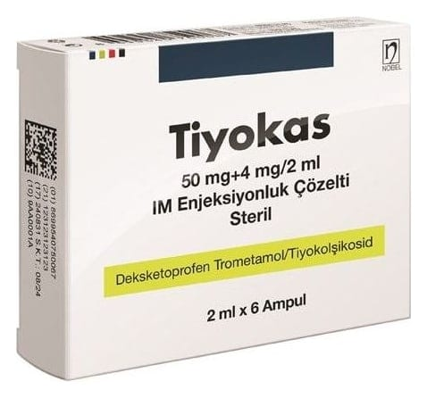

Tiyokas 50 mg+4 mg/2 ml IM Enjeksiyonluk Çözelti , 6 Adet

Ne için kullanılır
KT · Bölüm 1TİYOKAS, sarı renkli, partikül içermeyen, berrak çözelti şeklinde enjeksiyonluk çözeltidir, aktif madde olarak her bir ampul 50 mg deksketoprofene eşdeğer 73,8 mg deksketoprofen trometamol ve 4 mg tiyokolşikosid içerir.
Deksketoprofen, steroidal olmayan antiinflamatuvar ilaçlar (NSAİİ’ler) (iltihap giderici) olarak adlandırılan ilaç grubundan bir ağrı kesicidir.
Tiyokolşikosid esas olarak kas gevşetici etkinliğe sahiptir. Ani ortaya çıkan omurilik kaynaklı ağrılı kas kasılmalarının ek tedavisinde etkilidir.
TİYOKAS, aşağıdaki hastalıkların bölgesel tedavisinde ağrı kesici ve iltihap giderici olarak etkilidir; • Ağrı, iltihap ve kas gerginliği ile kendini gösteren kas-iskelet sistem hastalıkları.
TİYOKAS enjeksiyonluk çözelti, her biri 2 ml berrak ve sarı renkli çözelti içeren 6 ampullük ambalajlar halinde mevcuttur.